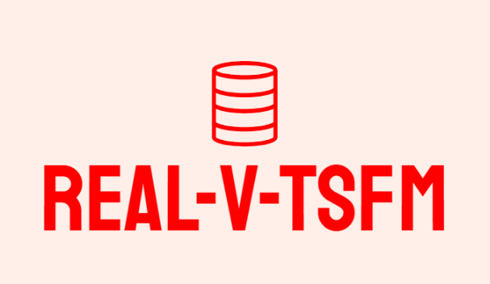
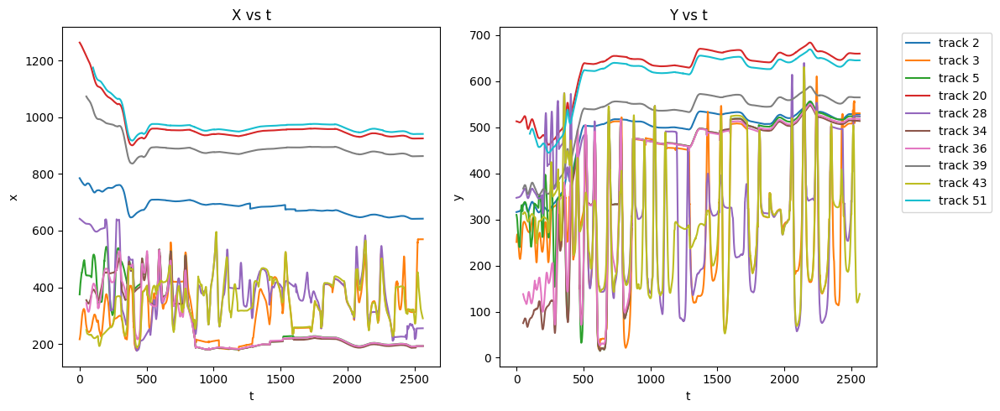
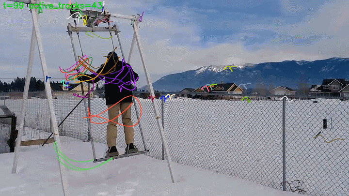
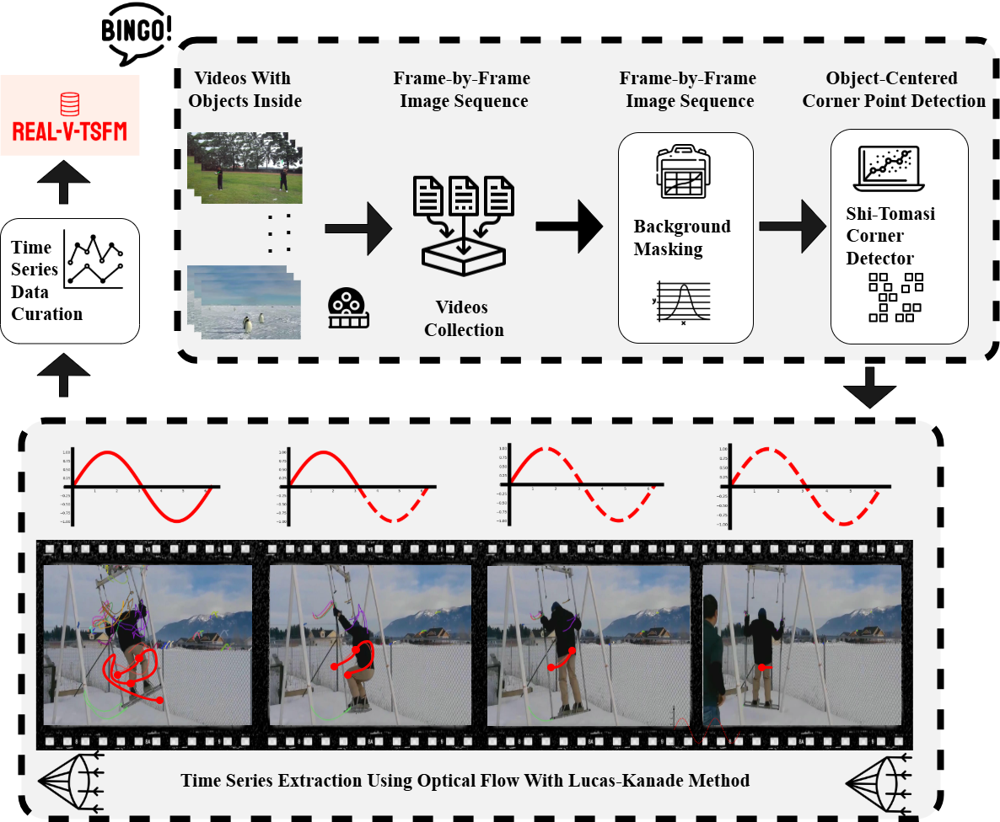

Install
uv sync uv pip install -e .

Open-source toolkit for extracting time series from video motion and benchmarking forecasting models with a reusable CLI workflow.
This project supports the paper How Far Do Time Series Foundation Models Paint the Landscape of Real-World Benchmarks? and proposes a practical benchmark paradigm using optical-flow extracted signals from large-scale videos.
Dataset: REAL-V-TSFM on Hugging Face

We mainly use LaSOT-style video sources to derive foreground and background motion trajectories, preserving realistic temporal diversity.
t: temporal indextarget: value at time taxis: x/y directiontrack_id: optical-flow track identifiertimestamp: model-friendly formatting fieldprefix: source video identifier
In analysis, around 44 percent of extracted series are stationary versus around 5 percent in M4, showing a clear temporal profile difference from classic benchmarks.

uv sync uv pip install -e .
rvtsfm-extract /path/to/sequence/img \ --output-dir ./outputs/run_01
rvtsfm-eval ./data/sample.jsonl \ --file-format jsonl \ --id-col unique_id \ --target-col target